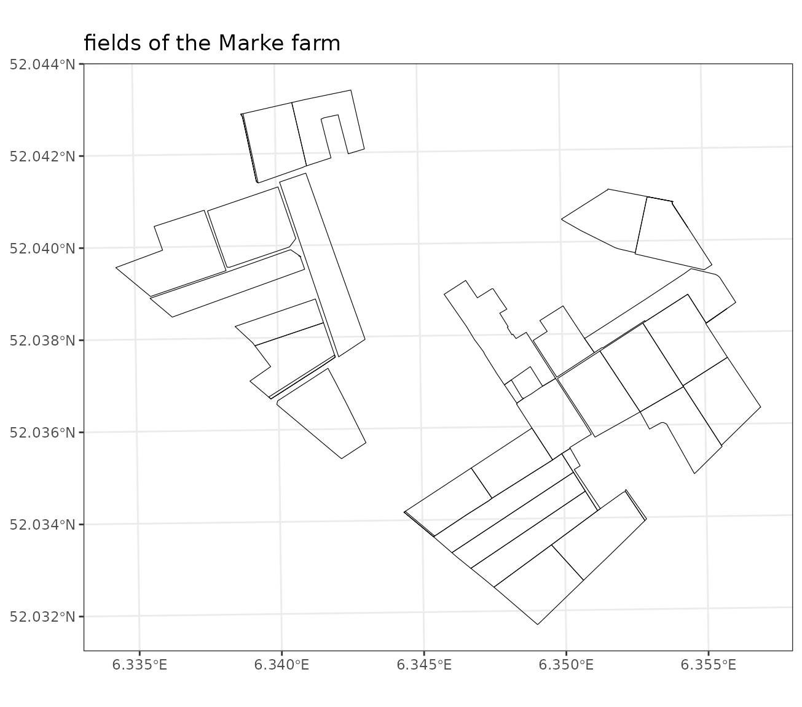
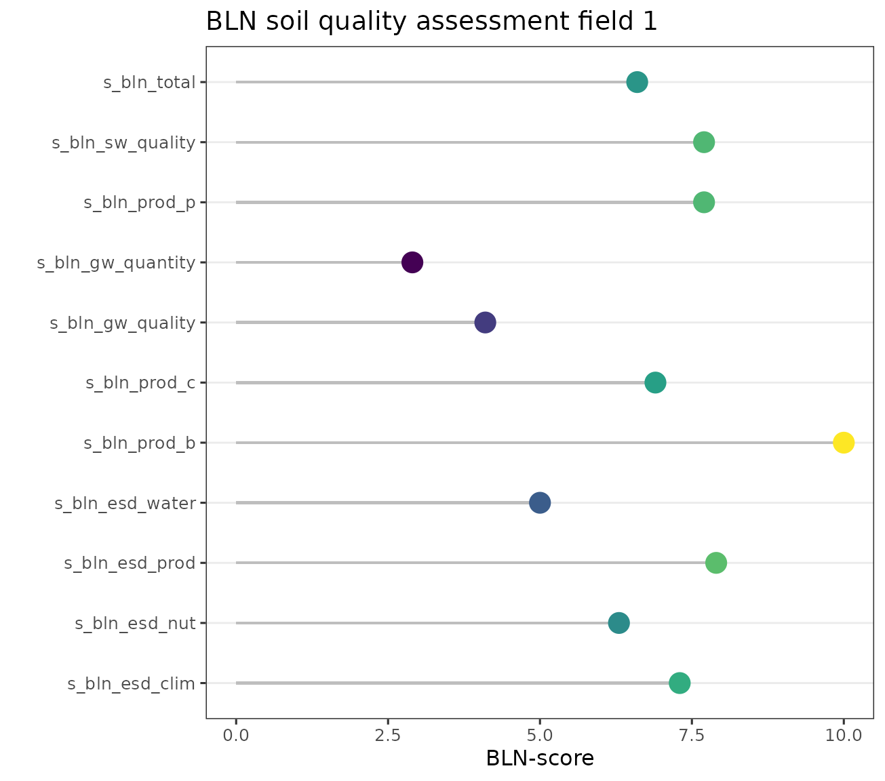

BLN introduction
The crucial role of healthy soil in achieving sustainable food production and environment is increasingly recognized, as is the importance of proper assessment of soil quality. Healthy soils are not just a growing medium for crops, but they regulate and support essential ecosystem services, such as water purification, carbon sequestration, and nutrient cycling, and they provide habitats for biodiversity. Improving and sustaining soil health are therefore key to sustainable crop production. To date, many attempts have been made to develop indices for assessing soil health, but an operational and reproducible methodology to assess soil health has not been developed so far. There is a broad consensus that multiple aspects of soils (e.g., chemistry, structure, and biology) and their interactions need to be considered. Further, various approaches have been proposed to translate soil attributes into indicators and aggregate them into an index, including (advanced) statistical methods and refined expert knowledge systems. These approaches however are often highly dependent on costly soil measures, are difficult to interpret, and not easily applicable across spatial scales, ranging from field to regions. To overcome these challenges, Ros et al. (2021) introduced a new soil assessment framework, being the open soil index (OSI). The OSI builds on extensive soil and agronomic research to maintain a direct link to the objective (which is sustainable crop production), leverages routine laboratory data and public databases to make its large-scale application affordable, has a modular design to allow for easy adjustment and expansion, is developed in an open-source environment to assure transparency, and provides advice for field-level farming practices. In this way, OSI strives to provide an operational soil assessment that valorizes soil health and therewith promote sustainable soil management.
From 2021 onwards, soil scientists, agronomy researchers, farm advisors and extension service providers collaborated to expand the OSI approach to include multiple ecosystem services. Where the OSI strongly focuses on the interpretion of soil health in view of crop production, many other ecosystem services are recognized as crucial societal objectives that soil can contribute.Relevant soil ecosystem services from the Sustainable Development Goals (SDGs) include not only delivery of healthy food (SDG2 and SDG3) but also clean and sufficient water (SDG6), the mitigation of climate (SDG13), and the support for biodiversity and protection of land degradation (SDG15). Engaging farmers to consider these SDGs requires extension of the framework to include more environmental soil functions.
The newly developed framework follows the conceptual approach of the
OSI and expands the soil health assessment in view of these ecosystem
services. A full description is given in the (Dutch) report Bodemindicatoren Landbouwgronden in Nederland,
and implemented in this BLN R package. This tutorial gives a short
explanation of the package focussing on the main functionalities of the
R package.
Importing dataset for research farm
We start with some (virtual) data being collected for one of the research farms in the Netherlands: de Marke. This husbandry farm is located in the Eastern part of the Netherlands, characterised by drought sensitive sandy soils, and the main land use is grassland and maize.
# select the data for de Mare farm
s1 <- copy(BLN::bln_farm_hf)
# make a spatial object from the farm, only latest year
s1 <- st_as_sf(s1[year==2022,.(id,geom)])
# show the first line with all properties for a single field and latest year
p1 <- ggplot(data=s1) +
geom_sf(color='black', fill = NA) +
ggtitle('fields of the Marke farm') +
coord_sf(crs=28992) + theme_bw()
p1
The dataset contains soil properties from 29 agricultural fields and
is documented in ?bln_farm_hf. An overview of all variables
is given below. When interested, look to the summary of the
bln_farm_hf object.
More information on the input and ouput variables are documented in a
separate vignette vignette("bln_column_description").
# select the data for de Mare farm
dt <- copy(BLN::bln_farm_hf)
# remove unique field identifier (for visual clarity)
dt[, ref_id_2022 := NULL]
# show the first line with all properties for a single field and latest year
print(colnames(dt[1]))
#> [1] "B_LU_BRP" "id" "geom"
#> [4] "year" "A_P_AL" "A_P_CC"
#> [7] "A_SOM_LOI" "A_P_WA" "A_P_SG"
#> [10] "A_N_PMN" "A_PH_CC" "A_CLAY_MI"
#> [13] "A_N_RT" "A_P_OX" "A_AL_OX"
#> [16] "A_FE_OX" "A_S_RT" "A_CN_FR"
#> [19] "A_CEC_CO" "A_SILT_MI" "A_SAND_MI"
#> [22] "A_MG_CC" "A_K_CC" "A_P_RT"
#> [25] "A_ZN_CC" "A_CU_CC" "A_MN_CC"
#> [28] "A_CACO3_IF" "A_K_CO" "A_CA_CO"
#> [31] "A_MG_CO" "A_CA_CO_PO" "A_MG_CO_PO"
#> [34] "A_K_CO_PO" "A_K_KG" "A_K_HCL"
#> [37] "A_NA_CO" "A_NA_CO_PO" "A_NA_CC"
#> [40] "A_CU_HNO3" "A_CO_CC" "A_CO_AA"
#> [43] "A_B_HW" "A_B_CC" "A_NA_HCL"
#> [46] "A_MO_CC" "A_SE_CC" "A_FE_CC"
#> [49] "B_SOILTYPE_AGR" "B_DRAIN" "B_SLOPE_DEGREE"
#> [52] "own" "owp" "gw"
#> [55] "B_AER_CBS" "B_HELP_WENR" "B_SC_WENR"
#> [58] "B_GWL_CLASS" "a_som_loi_csat_bau" "a_som_loi_csat_top"
#> [61] "d_cs_bau" "d_cs_top" "B_GWL_GHG"
#> [64] "B_GWL_GLG" "B_GWL_ZCRIT" "B_GWP"
#> [67] "B_CT_PSW" "B_CT_NSW" "B_LSW_ID"
#> [70] "D_RO_R" "D_SA_W" "B_AREA_DROUGHT"
#> [73] "B_FERT_NORM_FR" "B_LU_WATERSTRESS_OBIC" "B_LU_BBWP"
#> [76] "B_LU_CULTCAT4" "B_LU_SEASON"calculate BLN for a single field
Lets see how to assess the soil quality for a single field. First
select the first field given a crop rotation scheme for 11 years. This
is basically a subset of the farm and contains all soil and field
properties for the last 11 years, from 2012 up to 2022. We subsequently
use the function bln_field() to calculate the different
soil indicators and soil scores. Note that here all the possible inputs
are given whereas all the visual soil assessment observations (ending
with “_bsc”) and the management information are not required for the
current BLN calculation. These are therefore by default set to NA.
We start with a request for the soil indicators.
# select the data for the first field of de Marke farm
dt.field <- dt[id==1]
# calculate the BLN indicator values for that field
out <- BLN::bln_field(ID = dt.field$id,
B_LU_BRP = dt.field$B_LU_BRP,
B_SC_WENR = dt.field$B_SC_WENR,
B_GWL_CLASS = dt.field$B_GWL_CLASS,
B_SOILTYPE_AGR = dt.field$B_SOILTYPE_AGR,
B_HELP_WENR = dt.field$B_HELP_WENR,
B_AER_CBS = dt.field$B_AER_CBS,
B_GWL_GLG = dt.field$B_GWL_GLG,
B_GWL_GHG = dt.field$B_GWL_GHG,
B_GWL_ZCRIT = dt.field$B_GWL_ZCRIT,
B_DRAIN = dt.field$B_DRAIN,
B_FERT_NORM_FR = dt.field$B_FERT_NORM_FR,
B_SLOPE_DEGREE = dt.field$B_SLOPE_DEGREE,
B_GWP = dt.field$B_GWP,
B_AREA_DROUGHT = dt.field$B_AREA_DROUGHT,
B_CT_PSW = dt.field$B_CT_PSW,
B_CT_NSW = dt.field$B_CT_NSW,
B_CT_PSW_MAX =0.5,
B_CT_NSW_MAX = 5.0,
B_SOMERS_BC = NA_real_,
B_DRAIN_SP = NA_real_,
B_DRAIN_WP = NA_real_,
A_SOM_LOI = dt.field$A_SOM_LOI,
A_SOM_LOI_MLMAX = dt.field$a_som_loi_csat_top,
A_CLAY_MI = dt.field$A_CLAY_MI,
A_SAND_MI = dt.field$A_SAND_MI,
A_SILT_MI = dt.field$A_SILT_MI,
A_DENSITY_SA = NA_real_,
A_FE_OX = dt.field$A_FE_OX,
A_AL_OX = dt.field$A_AL_OX,
A_PH_CC = dt.field$A_PH_CC,
A_N_RT = dt.field$A_N_RT,
A_CN_FR = dt.field$A_CN_FR,
A_S_RT = dt.field$A_S_RT,
A_N_PMN = dt.field$A_N_PMN,
A_P_AL = dt.field$A_P_AL,
A_P_CC = dt.field$A_P_CC,
A_P_WA = dt.field$A_P_WA,
A_P_SG = dt.field$A_P_SG,
A_CEC_CO = dt.field$A_CEC_CO,
A_CA_CO_PO = dt.field$A_CA_CO_PO,
A_MG_CO_PO = dt.field$A_MG_CO_PO,
A_K_CO_PO = dt.field$A_K_CO_PO,
A_K_CC = dt.field$A_K_CC,
A_MG_CC = dt.field$A_MG_CC,
A_MN_CC = dt.field$A_MN_CC,
A_ZN_CC = dt.field$A_ZN_CC,
A_CU_CC = dt.field$A_CU_CC,
A_EW_BCS = NA,A_SC_BCS = NA,A_GS_BCS = NA,A_P_BCS = NA,A_C_BCS = NA,
A_RT_BCS = NA,A_RD_BCS = NA,A_SS_BCS = NA,A_CC_BCS = NA,
D_SA_W = dt.field$D_SA_W,
D_RO_R = dt.field$D_RO_R,
M_COMPOST = NA_real_,M_GREEN = NA,M_NONBARE = NA,M_EARLYCROP = NA,
M_SLEEPHOSE = NA,M_DRAIN = NA,M_DITCH = NA,M_UNDERSEED = NA,
M_LIME = NA,M_NONINVTILL = NA,M_SSPM = NA,M_SOLIDMANURE = NA,
M_STRAWRESIDUE = NA,M_MECHWEEDS = NA,M_PESTICIDES_DST = NA,
B_LSW_ID = NA_character_,LSW = NULL, output ='indicators',
runrothc = FALSE,
mc = FALSE)
# show the first line with all properties for a single field and latest year
# format in a long table, and subset the numeric columns only
dt2 <- copy(dt)[id==1 & year==2022][,geom := NULL]
# select numeric values and round to two digits
cols <- colnames(dt2)[grepl('A_|a_|d_|D_|B_CT|B_GWL_G|DEGRE|B_GWL_Z',colnames(dt2))]
dt2[,c(cols) := lapply(.SD,function(x) round(x,2)),.SDcols = cols]
# melt the data.table
dt.melt1 <- melt(dt2[,mget(c(cols,'id','year'))],
id.vars = c('id','year'),
variable.name = 'parameter', value.name = 'value')
# print the table
# knitr::kable(dt.melt1,caption='numerical input variables for BLN')
# print the table in nicer format
knitr::kable(
list(dt.melt1[1:14,3:4],dt.melt1[15:28,3:4],dt.melt1[29:42,3:4],dt.melt1[43:56,3:4]),
caption = 'numerical input variables for BLN.',
booktabs = TRUE
)
|
|
|
|
# do the same for the categorial values
# format in a long table, and subset the numeric columns only
dt3 <- copy(dt)[id==1 & year==2022][,geom := NULL]
# select categorial variables
cols2 <- colnames(dt3)[!colnames(dt3) %in% cols]
# convert to chracter
dt3 <- dt3[,lapply(.SD,as.character),.SDcols = cols2]
# melt the data.table
dt.melt2 <- melt(dt3[,mget(cols2)],
id.vars = c('id','year'),
variable.name = 'parameter', value.name = 'value')
# print the table
# knitr::kable(dt.melt2,caption='categorial input variables for BLN')
# print the table in nicer format
knitr::kable(
list(dt.melt2[1:9,3:4],dt.melt2[10:18,3:4]),
caption = 'categorial input variables for BLN.',
booktabs = TRUE
)
|
|
To simplify, one can also use a data.table as input. In that case use
the function bln_field_dt(). The function checks whether
all desired input variables are present. By default is the option to
calculate the C saturation with RothC switched off. Again, the
illustration below shows the use of bln_field_dt to
retreive the BLN indicators. For the interpretation of each of the 35
soil indicators, one can have a look at the
vignette("bln_column_description")
# select the data for de Marke farm
dt.field <- dt[id==1]
# add a few variables to de Marke farm (needs an update)
dt.field[,ID := id]
dt.field[,c("B_SOMERS_BC","B_DRAIN_SP","B_DRAIN_WP") := NA_real_]
# calculate the BLN indicator values excluding RothC and LSW = NULL
out <- bln_field_dt(dt.field, output = 'indicators')
# calculate the BLN indicator values including RothC and associated LSW table
# out <- bln_field_dt(dt.field, LSW = BLN::bln_lsw_farm_hf,output = 'indicators', runrothc = TRUE)
# print the names of the output object
print(colnames(out))
#> [1] "ID" "i_b_di" "i_b_sf" "i_c_k" "i_c_mg"
#> [6] "i_c_n" "i_c_p" "i_c_ph" "i_c_s" "i_clim_csat"
#> [11] "i_clim_osb" "i_gw_gwr" "i_gw_ngw" "i_gw_nlea" "i_gw_nret"
#> [16] "i_gw_pest" "i_gw_wb" "i_nut_k" "i_nut_n" "i_nut_nue"
#> [21] "i_nut_p" "i_p_as" "i_p_co" "i_p_cr" "i_p_ds"
#> [26] "i_p_du" "i_p_ro" "i_p_se" "i_p_whc" "i_p_wo"
#> [31] "i_p_ws" "i_sw_nret" "i_sw_nro" "i_sw_nsw" "i_sw_psw"To ask for the BLN scores, summarizing the contribution of the soil
to various ecosystem services, one can ask for the scores as output.
Just replace the argument output with scores rather than
indicators. It is also possible to ask for both: just set
the argument output equal to all, being the default
option.
Below we summarize the BLN score for a single field. Given the hierarchical structure of the BLN soil quality assesment, the following scores are calculated:
- BLN total score represents the overall integrated soil quality assessment, where the score varies from zero (serious bottlenecks being present) up to one (the quality is optimal for the crop rotation plan on this field)
- ESD crop production: the quality score reflecting the ability of the soil to sustain crop production
- ESD climate mitigation: the quality score reflecting the ability of the soil to store carbon in soil and mitigate climate change
- ESD nutrient cycling: the quality score reflecting the ability of the soil to recycle (regional) nutrients efficiently
- ESD water: the quality score reflecting the ability of the soil to retain and purify water leaching to ground and surface water
Besides these four ecoystem services provided by the soil, two of the ESS can be shown in more detail, thereby reflecting underlying processes controlling the ESS. First, the ESS crop production can be separated into the soil quality assessment in view of chemical, physical and biological soil functions contributing to the ability of soils to sustain crop production. Second, the ESS water involves a separate assessment of the capacity of soils to retain and recharge groundwater, and to purify the water leaching to surface water on the one hand and to groundwater to the other.
# calculate the BLN indicator and scoring values also without RothC calculations (not run)
# out <- bln_field_dt(dt.field, output = 'all', runrothc = FALSE)
# calculate the BLN scoring values for ecosystem services, without using RothC
out <- bln_field_dt(dt.field, output = 'scores')
# reformat the output in a long table
out.melt <- melt(out,id.vars='ID',variable.name='soil_ESD',value.name='shi')
out.melt <- out.melt[!soil_ESD %in% c('s_bln_clim','s_bln_nut')]
# set levels for the soil_ESD with a new label for the figure
plevel = c('s_bln_gw_quality','s_bln_gw_quantity','s_bln_sw_quality','s_bln_esd_water',
's_bln_esd_nut','s_bln_esd_clim',
's_bln_prod_b','s_bln_prod_p','s_bln_prod_c','s_bln_esd_prod', 's_bln_total')
tlabel = c('groundwater quality','groundwater quantity',
'surfacewater quality','ESS water',
'ESS nutrient cycling','ESS climate mitigation',
'crop production biology','crop production physics',
'crop production chemistry','ESS crop production',
'BLN total score')
out.melt[,tsoil_ESD := factor(soil_ESD,levels = plevel,labels = tlabel)]
# print the output object
knitr::kable(out.melt[,.(ID,ESS = soil_ESD,description=tsoil_ESD,score = shi)],
caption='BLN scores for field 1')| ID | ESS | description | score |
|---|---|---|---|
| 1 | s_bln_esd_clim | ESS climate mitigation | 0.73 |
| 1 | s_bln_esd_nut | ESS nutrient cycling | 0.63 |
| 1 | s_bln_esd_prod | ESS crop production | 0.79 |
| 1 | s_bln_esd_water | ESS water | 0.46 |
| 1 | s_bln_prod_b | crop production biology | 1.00 |
| 1 | s_bln_prod_c | crop production chemistry | 0.69 |
| 1 | s_bln_gw_quality | groundwater quality | 0.28 |
| 1 | s_bln_gw_quantity | groundwater quantity | 0.29 |
| 1 | s_bln_prod_p | crop production physics | 0.77 |
| 1 | s_bln_sw_quality | surfacewater quality | 0.77 |
| 1 | s_bln_total | BLN total score | 0.65 |
# to show the output in a lollipop figure
plabel = c('groundwater\nquality','groundwater\nquantity',
'surfacewater\nquality','ESS water',
'ESS nutrient\ncycling','ESS climate\nmitigation',
'crop production\nbiology','crop production\nphysics',
'crop production\nchemistry','ESS crop\nproduction',
'BLN total score')
out.melt[,psoil_ESD := factor(soil_ESD,levels = plevel,labels = plabel)]
p1 <- ggplot(out.melt, aes(x= soil_ESD, y= shi*10, group = soil_ESD, color = shi)) +
geom_col(fill = 'grey', color = NA, width = 0.05) + geom_point(size = 5) +
ylab('BLN-score') + xlab('') +
theme_bw(12) + theme(legend.position = 'none',
panel.grid.major.x = element_blank(),
panel.grid.major.y = element_line(linewidth = 0.5),
panel.grid.minor.x = element_blank()) +
coord_flip() +
scale_fill_viridis_d()+ scale_color_viridis_c() +
ggtitle('BLN soil quality assessment field 1')
p1
Reading more?
More vignettes will be made available regarding the derivation of all soil health indicators, the aggregation methods applied, the derivation of optimum land use given the current soil quality assessments, and the best management practices to be applied to improve the soil quality. Are you interested to contribute, please contact the author(s) of this R package. Enjoy!